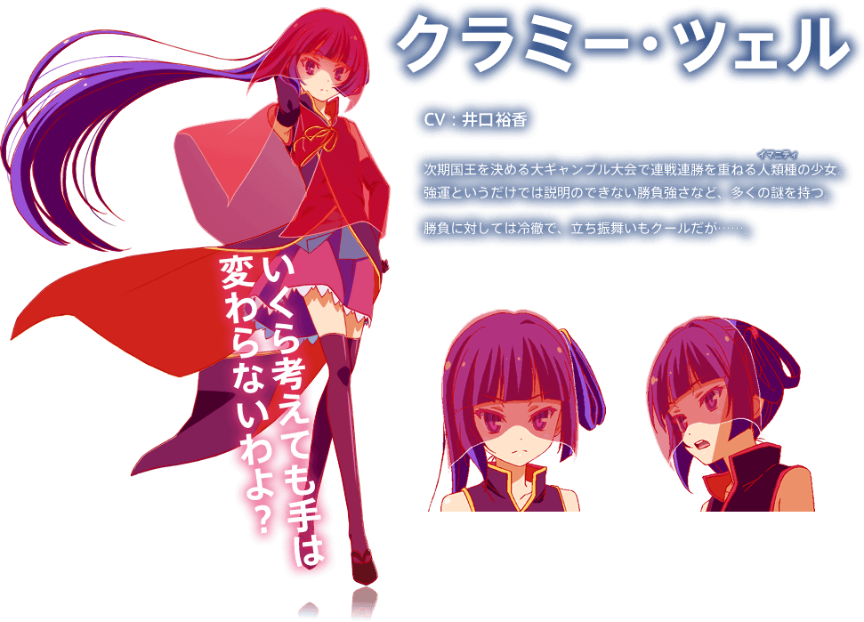

Chlammy Zell
Gender: Female
Age: 18
Race: Human (Imanity)
Hair Color: Dark Purple (Anime), Purple that transitions to orange and yellow at the tips (Light Novel)
Eye Color: Dark Blue
Voice Actor: Yuka Iguchi
Character Introduction: Clammy Zell(クラミー・ツェル, Kuramī Tseru) is a human who allied herself with the Elves to try and win the king's contest, due to her belief that humans will never be strong enough and must depend on others to survive. She is the friend of the Elf girl Fiel Nirvalen, despite being a slave of Fiel's family.
Fiel Nirvalen
Gender:Female
Age: 52
Race: Elf
Hair Color: Blonde (Anime), Mostly blond with purple and blue at the tips (Light Novel)
Eye Color: Dark Blue Irises with Pink Clover Pupils
Voice Actor: Mamiko Noto
Character Introduction: Fiel Nirvalen (フィール・ニルヴァレン, Fīru Niruvaren) who usually has her name shortened to Fii, is an Elf girl who is Chlammy Zell's game partner, as well as the one who helps her cheat using her elven magic.
Izuna Hatsuse
Gender: Female
Age: 8
Race: Werebeast
Hair Color: Dark periwinkle purple (Anime), Dark purple with orange at the tips (Light Novel)
Eye Color: Chestnut (Anime), Black (Light Novel)
Voice Actor: Sawashiro Miyuki
Character Introduction: Izuna Hatsuse (初瀬 いずな, Hatsuse Izuna) is a Werebeast girl and the former ambassador of the Werebeast race to Immanity.